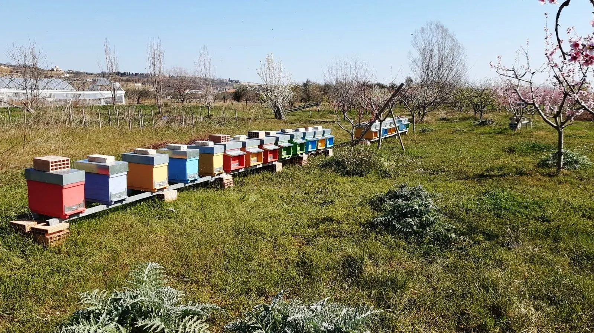

Recupero e rimozione sciami
Uno sciame si è posato in giardino, su un albero o su un muro? Interveniamo per recuperarlo senza fare del male alle api e dargli una nuova casa. Massima disponibilità.
La nostra apicoltura
Un'apicoltura artigianale: arnie seguite una per una, il rispetto delle api prima di tutto e un miele che arriva in vasetto così come lo fanno loro.

Ogni ape ha il suo compito e ogni colonia va seguita da vicino: controlliamo la regina, la covata e le scorte, soprattutto prima dell'inverno.
L'acacia a maggio, il millefiori di primavera, il girasole in estate. Ogni miele nasce da una fioritura precisa e dal lavoro delle api in quel momento.
Smieliamo solo il miele opercolato, cioè maturo e già sigillato dalle api nelle cellette del favo. Poi lo invasettiamo noi, senza aggiunte.

il nespolo
Il lavoro dell’apicoltore in inverno si concentra sulla manutenzione delle arnie e degli apiari. Si fanno lavori di falegnameria, si ripuliscono gli strumenti da lavoro, si revisionano le arnie vuote giacenti in magazzino, ci si comincia a procurare fogli cerei, telaini, filo, per armare i telaini e ad applicare i fogli cerei sia per il melario che per il nido. Nelle regioni più calde si può cominciare a nutrire le famiglie con la soluzione zuccherina.

il mandorlo, il rosmarino, l’erica, il tarassaco, la rapa, i cavoli e la colza
Aumentano le giornate di sole, durante le quali le api volano in cerca di polline e di acqua per la prima covata che all’interno dell’alveare comincia a svilupparsi. Nei pressi dell’apiario si colloca un abbeveratoio nutriente. Questo perché le api non si allontanino troppo dall’apiario in cerca di sostanze minerali e rischiando così di non rientrare a causa del freddo. Se alla fine del mese sono presenti fioriture (come l’erica) è utile portare le arnie a bottinarle per fortificare le famiglie.

il rosmarino, la rapa, la colza, la rucola, il mandorlo
Nonostante il tempo ballerino, marzo è il mese in cui riprendono “ufficialmente” i lavori in apiario. È infatti adesso che le visite si fanno più frequenti e che si iniziano a prendere quegli accorgimenti necessari per affrontare nel modo migliore l’inizio delle fioriture. Ovviamente si raccoglie quello che si è seminato: se si è eseguito un corretto invernamento si avranno quasi sicuramente famiglie che hanno svernato bene, pronte a ripartire con la raccolta e senza grossi problemi. Le api cominciano l’attività frenetica. L’apicoltore visita le colonie con maggior frequenza per controllare la regina e la presenza di covata. Se in questo mese è tornato il freddo si regola la porticina d’ingresso per proteggere la covata dagli spifferi.

l’albicocco, il pesco, il susino, il ciliegio, il melo, il pero, il salice, la borragine, il cisto, l’erica, la rapa, la colza, la rucola
Finalmente è arrivata la primavera! Sperando non ritorni il freddo, si deve cercare di mantenere le famiglie al caldo fino al nuovo innalzamento delle temperature. Il mese di aprile è un mese fondamentale per lo sviluppo. I ritmi aumentano sia all’interno dell’arnia che per l’apicoltore che andrà ad aumentare le attività di controllo ed i lavori in apiario. Si possono iniziare a togliere le eventuali protezioni invernali ed a dare spazio alla famiglia in fase di sviluppo. Si possono aggiungere telaini costruiti rimandando l’aggiunta di fogli cerei alla seconda metà del mese, quando nasceranno le api della nuova covata. Bisogna conoscere lo stato della famiglia e valutare la necessità dell’eventuale nutrizione di supporto. In questo periodo, se predomina il bel tempo, la natura fa il resto. Le fioriture sono molte ed il nettare si trova in abbondanza nei fiori di campo e nelle copiose fioriture degli alberi da frutto. Il periodo di sciamatura ancora è minimo, tuttavia il bravo apicoltore, conoscendo il proprio apiario e sapendo valutare l’equilibrio della famiglia, sa quali sono quelle con forte propensione alla sciamatura e deve controllarne attentamente lo sviluppo. Si deve inoltre iniziare a ripulire la zona dell’apiario per evitare infestazioni di erba o rovi che andranno successivamente a ricoprire le arnie.

l’acacia, il tamerice, il pitosporo, il cisto, il tarassaco, la lupinella, il timo, la facelia
Nel mese di maggio c’è una delle fioriture più importanti ossia quella dell’acacia. Oltre alle condizioni di bel tempo per avere una fioritura importante e ricca di nettare è necessario che il fiore maturi. Tale maturazione avviene in condizioni ideali con temperature medie intorno ai 10° C. E’ il periodo ideale per la sostituzione di eventuali telaini da nido deteriorati, smielare l’acacia per poi continuare con il grande raccolto, aggiungere i melari, controllare gli sciami ed eventualmente sostituire le regine più anziane.

l’eucalipto, l’acacia, il castagno, il timo, i trifogli, la veccia, la lupinella, la galega, il rovo, la salvia, la lavanda, l’ippocastano, la facelia
Continua la bottinatura in pianura e in collina. Si sorvegliano i melari, e se ne aggiungono dove serve. Si smiela tutto il miele opercolato, il millefiori di primavera è il migliore! Ci si può preparare a raccogliere il castagno.

il meliloto, la medica, la veccia, i trifogli, il castagno, il tiglio, il rovo, la lavanda, il girasole, la galega, la facelia
Il caldo estivo mette alla prova le famiglie di api, che hanno bisogno di molta acqua per regolare la temperatura del nido. L’apicoltore fa attenzione a posizionare i propri alveari in zone ombreggiate e a mettere a disposizione delle api un abbeveratoio nelle vicinanze, onde evitare spiacevoli incidenti con i vicini che potrebbero allarmarsi della presenza di api nei sottovasi o nelle piscine. In alcune zone sono in corso gli ultimi raccolti di castagno, eucalipto, millefiori e melata, ma è ancora lontana la possibilità di concedersi un po’ di riposo: è questo, infatti, il momento in cui si pongono le basi per il lavoro dell’anno successivo, tenendo a bada i nemici dell’alveare, accompagnando la crescita delle nuove colonie, verificando il buon vigore delle regine e andando a sostituire quelle più vecchie o esaurite.

il brugo, il girasole, il lamio, il ginestrino, la medica, il meliloto, il mirto, la santoreggia
In questo periodo l’apicoltore può iniziare a lavorare per preparare le famiglie ad un buon invernamento, è consigliabile verificare accuratamente il nido, iniziando a controllare la consistenza delle scorte, della covata e la salute della colonia in generale, intervenendo se necessario sulle famiglie più deboli.

il brugo, l’edera, l’inula, il lamio, il girasole, la medica, il trifoglio bianco e violetto
L’approssimarsi dell’autunno nelle zone più fresche costringe le famiglie a prepararsi all’inverno, riducendo le covate e immagazzinando le scorte il più vicino possibile al nido. Vengono tolti i melari e, una volta estratto l’ultimo miele, immagazzinati per la stagione successiva. Nelle zone più calde, invece, le fioriture autunnali danno un’ulteriore spinta alla crescita degli alveari dopo il rallentamento estivo, con possibili raccolti di miele su eucalipto ed edera.

il brugo, l’edera, il rosmarino e alcune crucifere
Il mese di Ottobre è al pari dei mesi primaverili un mese molto importante per l'apicoltore ed è il periodo in cui si concentrano i lavori per portare avanti un buon invernamento. Le attività ed i controlli da portare avanti sono molti. Le giornate sono ormai brevi e nelle poche ore di luce le colonie si apprestano a raccogliere l'ultimo l'eventuale nettare e polline a disposizione per nutrire l'ultima covata pre-invernale, che andrà a formare la colonia di api per l'inverno. Il lavoro necessario per un buon invernamento deve essere fatto scrupolosamente fin dalle prime visite di Ottobre e correre ai ripari in caso di problemi. L'apicoltore deve verificare la presenza della regina, la consistenza e la forza della famiglia. Si controllano attentamente le scorte procedendo ove necessario ad una nutrizione di supporto appropriata che dovrà anche aiutare le api a superare l'inverno.

il brugo, il corbezzolo, il rosmarino e la facelia di seconda semina
Le giornate si accorciano e le regine, quasi ovunque, interrompono la deposizione. Il fermento dei mesi più caldi è sostituito dallo sforzo di mantenersi al caldo: le api si stringono le une alle altre per produrre il calore necessario alla loro sopravvivenza consumando il miele immagazzinato e facendo vibrare i muscoli del torace. Famiglie ben popolate e con scorte sufficienti non temono i rigori dell’inverno, ma se anche una sola delle due condizioni venisse a mancare potrebbero essere guai seri! L’apicoltore passa in rassegna gli apiari per controllare che siano in ordine e sufficientemente al riparo dalle intemperie: ad esempio in posti particolarmente ventosi vengono messi dei pesi sui tetti delle arnie per scongiurarne lo scoperchiamento.

il corbezzolo
Il mese di Dicembre è l'ultimo mese dell'anno, il primo mese dell'inverno, dove le nostre colonie inizieranno a sentire i primi freddi che si protrarranno anche nel mese di Gennaio. In questo mese, le attività in apiario sono ridotte al minimo. Le nostre colonie se ben invernate sono al caldo nel glomere ed è bene non provocare rumori nelle vicinanza dell'arnia o arrecare disturbi. Non potendo svolgere attività in apiario, il buon apicoltore approfitta del tempo a disposizione per sistemare le arnie ed i melari in magazzino, pulizia e pittura con vernici apposite, preparando i telaini per il prossimo anno ed anche per aggiornarsi, leggendo libri/riviste di settore, approfondendo argomenti o tecniche di interesse e confrontarsi con altri apicoltori. Dopodiché si concede finalmente il meritato riposo dalle fatiche fisiche, ma con la mente già tesa a programmare la nuova annata, con l’incrollabile ottimismo che questa passione suscita.
Uno sciame si è posato in giardino, su un albero o su un muro? Interveniamo per recuperarlo senza fare del male alle api e dargli una nuova casa. Massima disponibilità.

Matrimoni, battesimi, comunioni: prepariamo a mano bomboniere e segnaposto al miele, personalizzati. Chiama e personalizza il tuo ricordo più dolce.
I video sono su YouTube e si caricano solo quando premi play.